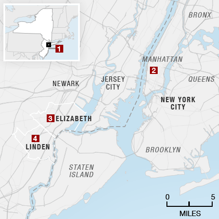

Key Locations

- 1 On Saturday morning, a bomb exploded in a trash can along the route of a planned charity race in Seaside Park, N.J. No one was injured.
- 2 On Saturday night, a bomb exploded in New York City's Chelsea neighborhood, injuring 29 people. Another unexploded bomb was found a few blocks away.
- 3 On Sunday night, a bag with five bombs in it was discovered outside a train station in Elizabeth, N.J.
- 4 On Monday morning, Ahmad Khan Rahami was arrested after a shootout in Linden, N.J. (Location shown is inexact.)